In part 1 of this series, we introduced the concept of interfaces and single object responsibility by starting to design a rudimentary implant. In this post, we’ll start to introduce design patterns and look at how we can re-use code across projects. Since our last post, I’ve made some changes to our implant code, based off the principals we introduced. These have mostly been adding layers of abstraction and setting things up for the next set of posts, but it’s worth taking the time to understand the changes and why I’ve made certain decisions about the code structure. The following diagram should give a rough idea of the changes: 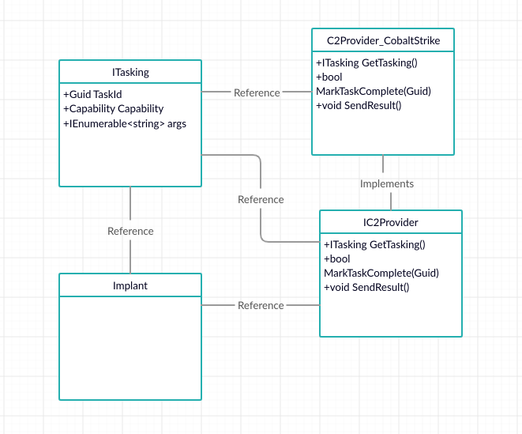 Our implant now gets “taskings” from a C2 provider. Those taskings reference a “capability”, which is a layer of abstraction over “something the implant can do”. Our implant code now looks like this: 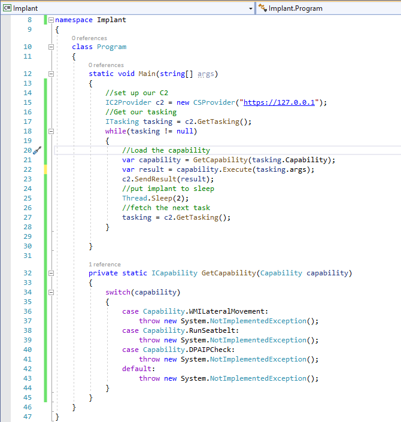 This code is setting up a C2 channel via a class which implements the “IC2Provider” interface. It then looks through available taskings, figures out what capability the tasking is invoking, executes it then goes to sleep before picking up the next tasking. I’ve also changed the layout of the code, which now looks like this: 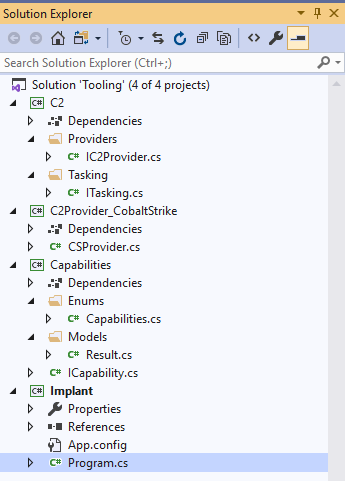 The C2 project is just a layer of abstraction over C2 providers. This allows us to keep the actual providers separate, meaning we wont be including code for a provider we aren’t using when we build our project. The scenario here is we may have a suit of providers to choose from, which we can just drop into new projects or switch out as needed, as they all implement a common interface. The capabilities project contains an enum of supported capabilities and an interface. This is another layer of abstraction which means we can pick and choose what capabilities we want to include. Now that we understand the code, lets take a look at implementing a capability. Our implant so far supports lateral movement via WMI, executing Seatbelt and doing something with DPAPI. I’m going to use SharpDPAPI to demonstrate how we can use existing code within our projects. In this example, we are using third-party code, but this could equally apply to code we wrote for another project. In our code, we have defined the interface that a capability must implement. Using this interface will allow us to build effective unit tests, and isolates our implant code from changes made to the capability library. SharpDPAPI does not implement our interface. In theory, we could just implement our own version, which would probably involve a lot of copy-paste into our own classes. While this would allow us to implement whatever interfaces we want, it also means we become responsible for that code. Any bug fixes applied up-stream would have to be manually ported. We could introduce new bugs during development and we’d have to write tests to cover the new code. This strategy also won’t help us if we ever want to use a closed-source library. Another option would be to refactor our existing code, perhaps to hard-code calling SharpDPAPI directly. Hopefully by now you understand why this would be a bad idea. Wanting to use existing code in a new project is a pretty common problem. It’s also not the only common problem that developers encounter. Developers encounter the same set of problems so often that standard ways to solve them have been devised, known as “design patterns”. A design pattern is a general, reusable solution to a common problem. They aren’t libraries which can be used, but rather fundamental ideas which must be implemented. The patterns are language-agnostic, although books with language-specific references are common. “Design patterns: elements of reusable object-oriented software” (non-affiliate link) is one of the most commonly used books on the subject, but there are also plenty of resources available online. To solve our problem, we can use the adapter pattern. This pattern allows us to take code which is incompatible with our existing interface and “adapt” it to fit our needs. This is commonly used when we have code in an existing project which solves a problem for us, but isn’t usable in the current project because the interfaces used don’t match. We can also use it to allow us to include third-party code, which is what we’ll do in this example. The adapter pattern takes an adaptee (the class which has the functionality we want to use) and converts its interface to match that of ITarget (the interface used by our code). In our example, we don’t have an interface to translate from, but the principal is the same. Let’s bring SharpDPAPI into our project and start implementing our adapter. We can download the source from GitHub, extract it and then add a reference to an existing project within our solution. 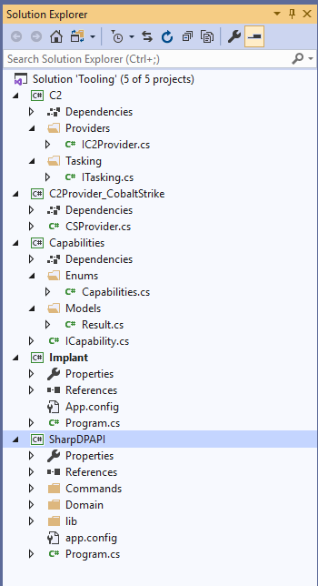 SharpDPAPI is a console application, designed to be run as a standalone application. We want to make use of some of its code, but not run the “Main” program method. Looking at the SharpDPAPI code, we can see it almost immediately calls into some other methods, where most of the processing is done. 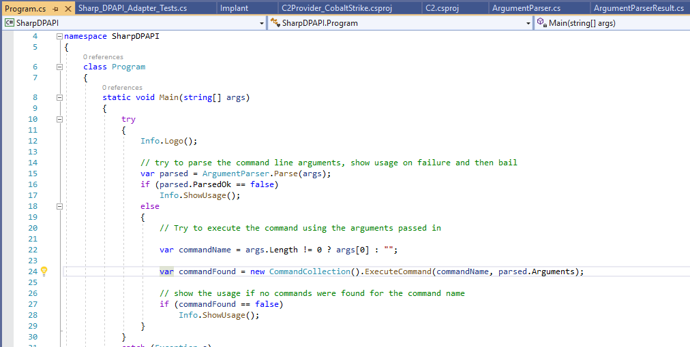 We can copy this code into our adapter, side-stepping the need to run SharpDPAPI as a console application. Within our Capabilities project, we can add a new class within the “Adapters” namespace, which implements the ICapability interface. This class must contain a public “Execute” method, which accepts an IEnumerable parameter containing our command arguments. We need to parse those arguments and translate them to the format SharpDPAPI is expecting. Once that’s done, we can call the CommandCollection() method from the above SharpDPAPI code directly. With a little bit of fiddling, we end up with something like this: 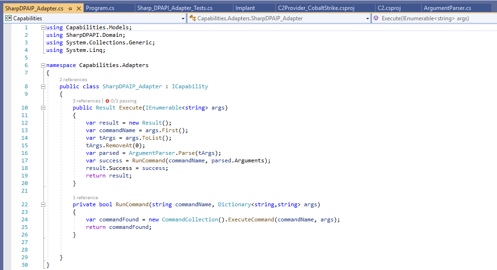 We take the first argument and assume that’s going to be the command name, strip that from the list of args and then call the SharpDPAPI code. We set up a Result object as our return value and use the success indicator returned by SharpDPAPI to populate its success value. SharpDPAPI is a console application. It outputs data to the console, which we don’t have access to. For this post, I’m going to ignore this problem as we can’t actually run our implant yet (you may have noticed the C2 code is missing). This presents a problem when we want to check our code is working. We can’t debug the main implant program, because half the functionality isn’t finished yet. We also don’t want to “hope for the best”, as we’ll likely end up with a horrifying number of errors to resolve at the end of the project. Enter unit testing. We’ve covered unit testing briefly in previous posts. For this post, all we really want to do is have a way to check our adapter code is running as we expect. We can add a new unit test project for the Capabilities class, which I’m going to call “Capabilities_UnitTests” (inventive naming, right?). Within this project, we can add a folder to contain all the adapter related tests, then a test class for our SharpDPAPI tests. 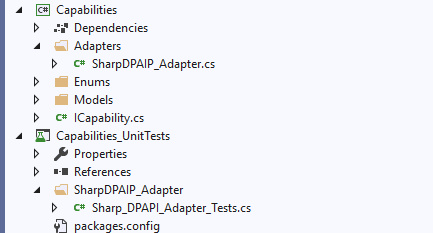 Within this class, we can add a simple “happy path” test, which just calls the adapter code with a single, working argument. 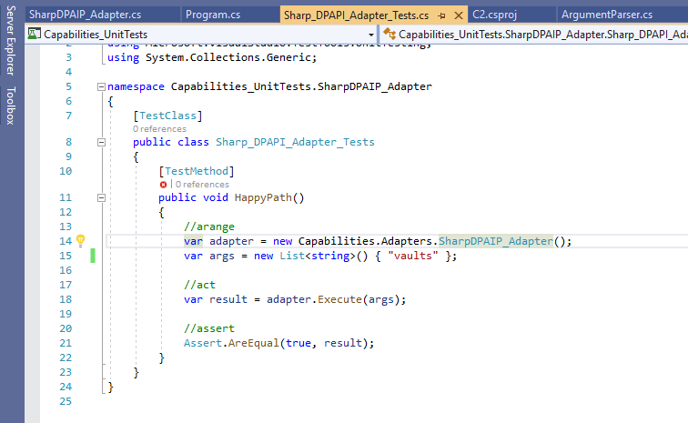 I’m using the Arrange, Act, Assert approach to writing my tests, where we set up the test, perform the action to be tested, then check that everything happened as expected. This example is quit straight-forward, as we are simply checking the result was true (successful). Unit tests have access to the console output, so after we run the test, we should be able to see what was returned from SharpDPAPI. 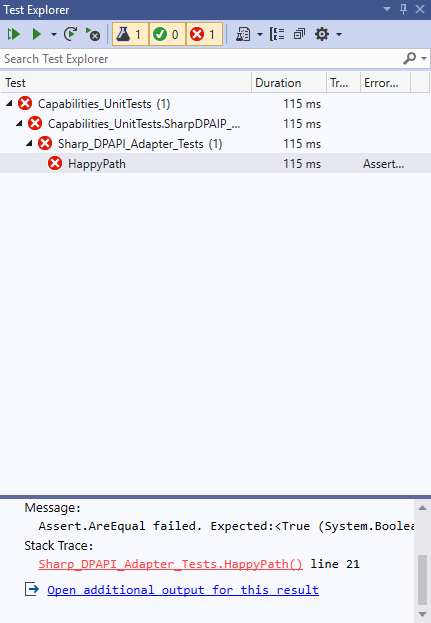 Our test failed, as we got a “failed” response back where we were expecting a successful response. Looking at the additional output, we can see that SharpDPAPI did run as expected, but failed due to an error with our master key. 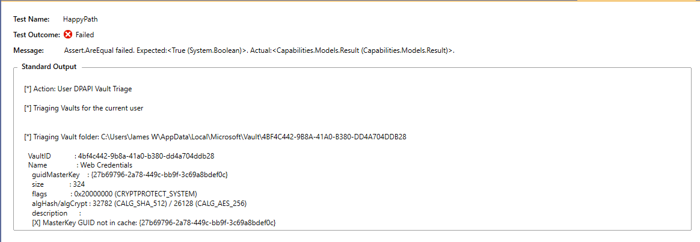 While we need to flesh out the test coverage for this component, that’s a job for another time. Before we call it a day with this post, lets update our implant to use our new code. 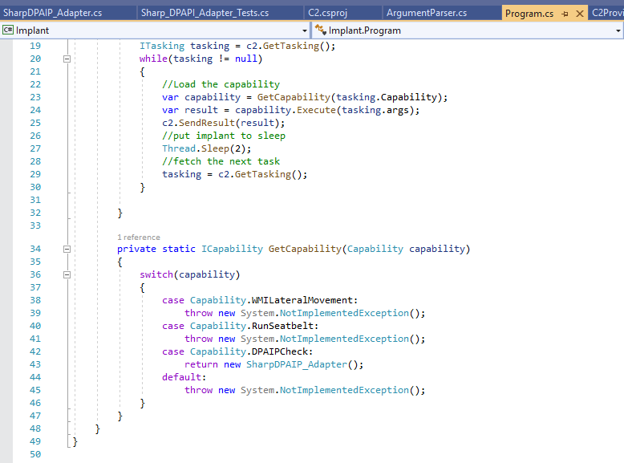 The change is quite simple. Hopefully you can see how implementing the ICapability interface is beneficial here. In this post we’ve introduced the concept of design patterns and seen how the adapter pattern can allow us to re-use existing code in our projects. We’ll look at some other patterns and introduce more complicated test strategies in later posts in this series. Finally, I hope it goes without saying that this is just a demo app, you probably don’t want to build an implant with C# and, if you did, embedding parts of GhostPack into it would almost certainly be a bad idea. Next Post→